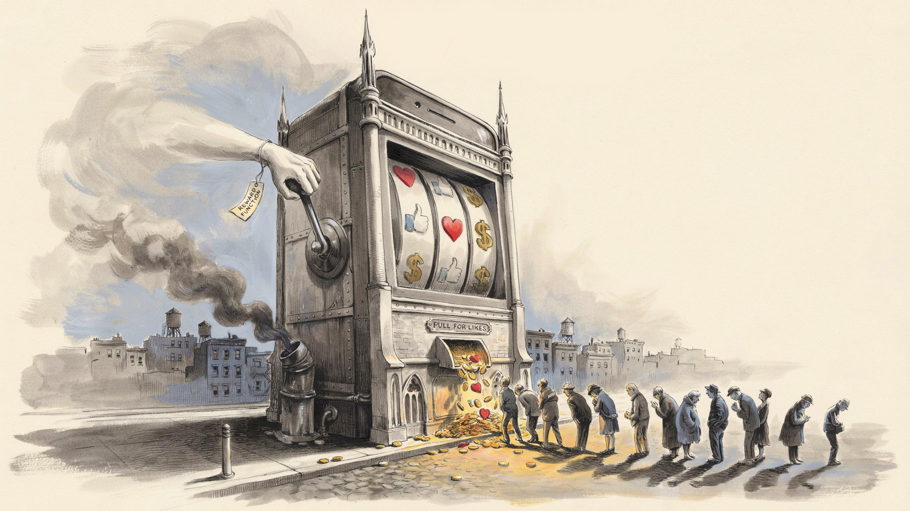

The Stupidity Subsidy
Everyone keeps asking whether technology made us dumber. Wrong question. The data says no. Our intelligence didn't move, the reward function did. We built the first machine in history that pays smart people to act like idiots, and then blamed the idiots.


“The purpose of a system is what it does.”
— according to Stafford Beer
There is a proverb you have all heard, however, most likely cut in half. Jack of all trades, master of none. The people who feel the sting of it like to restore what they call the original: …but oftentimes better than a master of one.
Comforting. Also, probably invented. That flattering tail has no clean early source and looks like a modern graft, bolted on by an age that decided the anxious generalist deserved a hug.
So the line has been edited twice.
Once to insult. Once to console.
Nobody edited it to be true. They edited it to fit a curve.
Now, hold that thought. It is the only idea in this essay. Everything else is an instance of it.
The Slogan That Ate Its Own Footnote
"Data is the new oil" is usually traced to Clive Humby, a British mathematician, around 2006. The Economist detonated it culturally in May 2017 with a cover declaring data, not oil, the world's most valuable resource. But Humby's actual point was sharper than the thing it spawned: data, like oil, is worthless in its crude state and only becomes valuable once refined. The refinement clause got amputated almost on contact, because slogans shed nuance the way a snake sheds skin. What survived in the wild is the crude form. Data is lying around, whoever extracts it gets rich and powerful. That mutilated version is the one people actually believe, so that is the one worth killing.
An analogy is a claim that two things share enough structure that intuitions transfer. The test is not whether some properties match, some always do; that is the trap. The test is whether the load-bearing properties transfer. They do not, and they fail at the most basic level economics offers.
Rivalry. Oil is rival and depletable. Burn a barrel and it is gone; you cannot also burn it. Scarcity is intrinsic to the thing. Data is non-rival and non-depletable: copied at near-zero marginal cost, used by a thousand parties at once, and not consumed by use. These are nearly opposite economic categories. The metaphor maps a thing onto its inverse. That alone should have ended it.
Fungibility. A barrel of Brent crude substitutes for another barrel of Brent crude. There is a grade, a unit, a spot price, a global exchange. That interchangeability is what makes oil a commodity. Data has no unit. My location history does not substitute for your purchase history. There is no spot price of data because there is nothing fungible to price. You cannot build an OPEC for something with no barrels.
Asset versus liability. More oil makes you unambiguously richer and does not spoil in the tank. More personal data increasingly makes you poorer at the margin: a larger breach surface, a regulatory exposure, a storage cost, a perishable asset whose predictive value decays as people move, change, and die. Most of what gets collected is never used. The industry calls it dark data, and it is a cost center, not a reserve. Oil does not degrade and does not get you sued.
Diminishing returns. The thousandth barrel is worth roughly what the first was. The thousandth near-duplicate user record is worth approximately nothing. Even in machine learning, where data is supposedly the fuel, returns are sublinear — you fight log-shaped scaling curves; you do not get proportional payoff for hoarding.
Wrong on rivalry, fungibility, asset character, and returns to scale. That is not a near-miss. That is a metaphor failing on every axis it was built to carry. Which raises the question nobody asks: if it is this wrong, why is it this popular?
The Opacity is the Tell
A bad metaphor that refuses to die is usually being kept alive because it is useful to someone. "Data is the new oil" is useful to the people doing the extracting. It naturalizes the act. Oil built the modern world, oil is heroic industry, so framing surveillance as "resource development" launders it into something neutral, even noble. It implies a property claim. Oil belongs to whoever pulls it from the ground, so the framing quietly asserts the extractor owns the data, even though, unlike oil, this resource is generated by the texture of your life and did not exist as a thing until it was captured. And it manufactures inevitability. Oil is just there in the geology; treating data the same way smuggles in the premise that collecting it is a fact of nature rather than a choice somebody made.
Here is the cleanest test, and it falsifies the analogy without any theory at all. If data were genuinely a commodity — tradeable, legitimately owned — you would expect commodity institutions: transparent markets, standard units, public registries, price discovery. Oil markets are radically transparent. Nobody hides who owns the well.
Now look at the data-center buildout, the physical body of the "data economy." You find the opposite of an oil market. As the reporting around the sector has documented, the firms operate behind shell LLCs that do not bear the parent's name. Magellan Enterprises LLC turning out to be Google, Sidecat LLC turning out to be Meta, a town handed a fifteen-year tax abatement without being told who it was dealing with. Air-quality permits filed for backup generators are, in places, the only public trace of a billion-dollar facility. City managers sign non-disclosure agreements that forbid them from naming the counterparty. There is no federal registry, no standard disclosure, no single auditable figure for the whole thing anywhere. Oil does not behave like this. The architecture of secrecy is what you build around something whose legitimacy you cannot defend in daylight, which is, precisely, not how a normal commodity behaves. The opacity does not hide the truth of the metaphor. The opacity is the refutation.
The Slogan Was Stuck to the Wrong Substance
So drop it? No, because there is a resource in the AI economy that behaves exactly like oil. Finite. Rival. Consumed in use. Geopolitically contested. Hoarded, smuggled, export-controlled. Demanding enormous extraction-and-refinement infrastructure between the raw input and the usable output. It is not data. It is compute… the chips, and the power and water and silicon beneath them.
The argument is made almost too plainly in the Superintelligence Strategy paper (Hendrycks, Schmidt, and Wang, March 2025). Their claim is that AI chips mirror fissile materials and chemical precursors: physically embodied, trackable, licensable, smuggle-able, and the dominant determinant of capability. They cite a measured correlation above 95% between compute used and model performance, holding across roughly fifteen orders of magnitude of scaling, and note that whoever owns datacenter compute could capture most of the economic gains. That is the grammar of uranium, not of an infinitely copyable information good.
Data is the abundant input. Compute is the scarce, rival, oil-like bottleneck. The metaphor was true. It was just slapped onto the cheap, plentiful thing instead of the expensive, finite one and that misdirection is convenient, because it aims your anxiety at your data while the actual chokepoints of power assemble quietly behind the LLCs.
What Got Left Off the Label is Where You Live
Notice what we have done three times now. The proverb kept master of none and dropped the rest. The slogan kept resource and dropped non-rival. In each case the editing was not neutral; what got cut revealed the cutter's curve. This is not a quirk of language. It is the literal operation of the machines now sorting your applications, your feed, your sentences.
A model that fits a curve performs lossy compression by definition. To generalize at all, it must declare some of its input to be noise. The residual, the part that does not sit on the line, is not an accident of the method; it is the method's output. The line is what survives the discarding.
That has a consequence most people get backwards. In statistics, the residuals are not garbage, they are where you discover the model is wrong. Misspecification lives in the part that refuses to fit. The same is true of a person. The parts of you that do not sit on the curve are exactly the parts most distinctively you and least predictable from everyone else. So a system that models you is most confident about you precisely where you are most generic, and goes blind exactly where you become yourself. It knows the median of you cold and the actual you not at all, and cannot tell the difference, because to the loss function your singularity is the error term.
Three claims follow, and intellectual honesty requires sorting them by weight, because they are not equal.
One: writing with the machine nudges the individual. This is demonstrated, and it is on the nose. Jakesch, Bhat, Buschek, Zalmanson, and Naaman, Co-Writing with Opinionated Language Models Affects Users' Views (CHI 2023), took 1,506 people, had them write about whether social media is good for society, and gave some a model quietly tilted toward one side. It changed not just what they wrote but their own opinions on a later survey. The authors call it latent persuasion, and the dangerous property is that it operates cumulatively across turns and is invisible to any single-output audit. No one suggestion is propaganda. The shaping lives in the aggregate, in the residual you cannot see at the level of one prompt.
Two: shared models homogenize outcomes. Kleinberg and Raghavan, Algorithmic Monoculture and Social Welfare (PNAS, 2021), prove that when many decision-makers converge on the same algorithm, overall decision quality can fall — even when that algorithm is more accurate for any single user in isolation, and with no external shock. A Braess paradox for judgment. The lived version is brutal: under monoculture, the person rejected by one bank is rejected by all of them, because they are all running the same map. The residual gets deleted not once but everywhere at once.
Three: this compounds into population-scale conformity. Here I have to demote my own thesis, because the field disagrees with itself. The 2020 Facebook/Instagram Election Study (Guess et al., Science, 2023) tore out the algorithmic feed for three months and found no significant effect on polarization or political attitudes. The map changed, the people did not. But that result is contested: a 2024 critique in Science (Bagchi, Menczer, Grabowicz, and colleagues) showed Meta ran 63 emergency "break-glass" changes during the experiment, quietly altering the very control condition. And it does not replicate cleanly across platforms. A field experiment on X (Gauthier and colleagues, run in 2023, published in Nature in 2026) found that switching the algorithm on shifted users' opinions in a more conservative direction, and that the shift persisted after the algorithm was switched back off, because it had already changed who they followed. Notice the asymmetry: switching the feed off did little, switching it on did plenty which is exactly why a study that only switched it off would find nothing. So the honest verdict is unsettled. The capacity is proven, the per-interaction effect is proven, the civilization-scale conformity is a live hypothesis that frightened people keep dressing up as a verdict.
I will own that, because the thesis is seductive, and seduction is itself a curve worth distrusting. But note why claim three is hard to pin down: the effect we are hunting hides in the aggregate and vanishes under per-output inspection, which is exactly what the residual is. The thesis predicts its own slipperiness. Profound, or unfalsifiable. A good essay names the tension instead of pretending it isn't there.
The Point
The slogan kept the word resource and quietly dropped non-rival, and in the gap a surveillance economy got to call itself a mining operation. The proverb kept master of none and grew a consoling tail, and a culture got to feel better about its own scattered attention. And the curve fitted to you keeps the predictable, median, monetizable fraction, and files the rest under noise.
But the rest is not noise. The rest is the part where you are wrong-footed, particular, unrepeatable, alive. The residual is where you live. Which is the whole danger, stated plainly: a system optimized to model you is optimized, in the same motion, to erase exactly what it cannot model, and to act, at scale, as though the caricature were the whole. You will not be surveilled. You will be rounded off.
Every prompt you make, every generation you take, they will be mapping you. Just remember what a map is. It is the territory with the inconvenient parts left out.
The Residual
What gets left off…
There is a proverb you have all heard, however, most likely cut in half. Jack of all trades, master of none. The people who feel the sting of it like to restore what they call the original: …but oftentimes better than a master of one.
Comforting. Also, probably invented. That flattering tail has no clean early source and looks like a modern graft, bolted on by an age that decided the anxious generalist deserved a hug.
So the line has been edited twice.
Once to insult. Once to console.
Nobody edited it to be true. They edited it to fit a curve.
Now, hold that thought. It is the only idea in this essay. Everything else is an instance of it.
The slogan that ate its own footnote
"Data is the new oil" is usually traced to Clive Humby, a British mathematician, around 2006. The Economist detonated it culturally in May 2017 with a cover declaring data, not oil, the world's most valuable resource. But Humby's actual point was sharper than the thing it spawned: data, like oil, is worthless in its crude state and only becomes valuable once refined. The refinement clause got amputated almost on contact, because slogans shed nuance the way a snake sheds skin. What survived in the wild is the crude form. Data is lying around, whoever extracts it gets rich and powerful. That mutilated version is the one people actually believe, so that is the one worth killing.
An analogy is a claim that two things share enough structure that intuitions transfer. The test is not whether some properties match, some always do; that is the trap. The test is whether the load-bearing properties transfer. They do not, and they fail at the most basic level economics offers.
Rivalry. Oil is rival and depletable. Burn a barrel and it is gone; you cannot also burn it. Scarcity is intrinsic to the thing. Data is non-rival and non-depletable: copied at near-zero marginal cost, used by a thousand parties at once, and not consumed by use. These are nearly opposite economic categories. The metaphor maps a thing onto its inverse. That alone should have ended it.
Fungibility. A barrel of Brent crude substitutes for another barrel of Brent crude. There is a grade, a unit, a spot price, a global exchange. That interchangeability is what makes oil a commodity. Data has no unit. My location history does not substitute for your purchase history. There is no spot price of data because there is nothing fungible to price. You cannot build an OPEC for something with no barrels.
Asset versus liability. More oil makes you unambiguously richer and does not spoil in the tank. More personal data increasingly makes you poorer at the margin: a larger breach surface, a regulatory exposure, a storage cost, a perishable asset whose predictive value decays as people move, change, and die. Most of what gets collected is never used. The industry calls it dark data, and it is a cost center, not a reserve. Oil does not degrade and does not get you sued.
Diminishing returns. The thousandth barrel is worth roughly what the first was. The thousandth near-duplicate user record is worth approximately nothing. Even in machine learning, where data is supposedly the fuel, returns are sublinear — you fight log-shaped scaling curves; you do not get proportional payoff for hoarding.
Wrong on rivalry, fungibility, asset character, and returns to scale. That is not a near-miss. That is a metaphor failing on every axis it was built to carry. Which raises the question nobody asks: if it is this wrong, why is it this popular?
The opacity is the tell
A bad metaphor that refuses to die is usually being kept alive because it is useful to someone. "Data is the new oil" is useful to the people doing the extracting. It naturalizes the act. Oil built the modern world, oil is heroic industry, so framing surveillance as "resource development" launders it into something neutral, even noble. It implies a property claim. Oil belongs to whoever pulls it from the ground, so the framing quietly asserts the extractor owns the data, even though, unlike oil, this resource is generated by the texture of your life and did not exist as a thing until it was captured. And it manufactures inevitability. Oil is just there in the geology; treating data the same way smuggles in the premise that collecting it is a fact of nature rather than a choice somebody made.
Here is the cleanest test, and it falsifies the analogy without any theory at all. If data were genuinely a commodity — tradeable, legitimately owned — you would expect commodity institutions: transparent markets, standard units, public registries, price discovery. Oil markets are radically transparent. Nobody hides who owns the well.
Now look at the data-center buildout, the physical body of the "data economy." You find the opposite of an oil market. As the reporting around the sector has documented, the firms operate behind shell LLCs that do not bear the parent's name. Magellan Enterprises LLC turning out to be Google, Sidecat LLC turning out to be Meta, a town handed a fifteen-year tax abatement without being told who it was dealing with. Air-quality permits filed for backup generators are, in places, the only public trace of a billion-dollar facility. City managers sign non-disclosure agreements that forbid them from naming the counterparty. There is no federal registry, no standard disclosure, no single auditable figure for the whole thing anywhere. Oil does not behave like this. The architecture of secrecy is what you build around something whose legitimacy you cannot defend in daylight, which is, precisely, not how a normal commodity behaves. The opacity does not hide the truth of the metaphor. The opacity is the refutation.
The slogan was stuck to the wrong substance
So drop it? No, because there is a resource in the AI economy that behaves exactly like oil. Finite. Rival. Consumed in use. Geopolitically contested. Hoarded, smuggled, export-controlled. Demanding enormous extraction-and-refinement infrastructure between the raw input and the usable output. It is not data. It is compute… the chips, and the power and water and silicon beneath them.
The argument is made almost too plainly in the Superintelligence Strategy paper (Hendrycks, Schmidt, and Wang, March 2025). Their claim is that AI chips mirror fissile materials and chemical precursors: physically embodied, trackable, licensable, smuggle-able, and the dominant determinant of capability. They cite a measured correlation above 95% between compute used and model performance, holding across roughly fifteen orders of magnitude of scaling, and note that whoever owns datacenter compute could capture most of the economic gains. That is the grammar of uranium, not of an infinitely copyable information good.
Data is the abundant input. Compute is the scarce, rival, oil-like bottleneck. The metaphor was true. It was just slapped onto the cheap, plentiful thing instead of the expensive, finite one and that misdirection is convenient, because it aims your anxiety at your data while the actual chokepoints of power assemble quietly behind the LLCs.
What got left off the label is where you live
Notice what we have done three times now. The proverb kept master of none and dropped the rest. The slogan kept resource and dropped non-rival. In each case the editing was not neutral; what got cut revealed the cutter's curve. This is not a quirk of language. It is the literal operation of the machines now sorting your applications, your feed, your sentences.
A model that fits a curve performs lossy compression by definition. To generalize at all, it must declare some of its input to be noise. The residual, the part that does not sit on the line, is not an accident of the method; it is the method's output. The line is what survives the discarding.
That has a consequence most people get backwards. In statistics, the residuals are not garbage, they are where you discover the model is wrong. Misspecification lives in the part that refuses to fit. The same is true of a person. The parts of you that do not sit on the curve are exactly the parts most distinctively you and least predictable from everyone else. So a system that models you is most confident about you precisely where you are most generic, and goes blind exactly where you become yourself. It knows the median of you cold and the actual you not at all, and cannot tell the difference, because to the loss function your singularity is the error term.
Three claims follow, and intellectual honesty requires sorting them by weight, because they are not equal.
One: writing with the machine nudges the individual. This is demonstrated, and it is on the nose. Jakesch, Bhat, Buschek, Zalmanson, and Naaman, Co-Writing with Opinionated Language Models Affects Users' Views (CHI 2023), took 1,506 people, had them write about whether social media is good for society, and gave some a model quietly tilted toward one side. It changed not just what they wrote but their own opinions on a later survey. The authors call it latent persuasion, and the dangerous property is that it operates cumulatively across turns and is invisible to any single-output audit. No one suggestion is propaganda. The shaping lives in the aggregate, in the residual you cannot see at the level of one prompt.
Two: shared models homogenize outcomes. Kleinberg and Raghavan, Algorithmic Monoculture and Social Welfare (PNAS, 2021), prove that when many decision-makers converge on the same algorithm, overall decision quality can fall — even when that algorithm is more accurate for any single user in isolation, and with no external shock. A Braess paradox for judgment. The lived version is brutal: under monoculture, the person rejected by one bank is rejected by all of them, because they are all running the same map. The residual gets deleted not once but everywhere at once.
Three: this compounds into population-scale conformity. Here I have to demote my own thesis, because the field disagrees with itself. The 2020 Facebook/Instagram Election Study (Guess et al., Science, 2023) tore out the algorithmic feed for three months and found no significant effect on polarization or political attitudes. The map changed, the people did not. But that result is contested: a 2024 critique in Science (Bagchi, Menczer, Grabowicz, and colleagues) showed Meta ran 63 emergency "break-glass" changes during the experiment, quietly altering the very control condition. And it does not replicate cleanly across platforms. A field experiment on X (Gauthier and colleagues, run in 2023, published in Nature in 2026) found that switching the algorithm on shifted users' opinions in a more conservative direction, and that the shift persisted after the algorithm was switched back off, because it had already changed who they followed. Notice the asymmetry: switching the feed off did little, switching it on did plenty which is exactly why a study that only switched it off would find nothing. So the honest verdict is unsettled. The capacity is proven, the per-interaction effect is proven, the civilization-scale conformity is a live hypothesis that frightened people keep dressing up as a verdict.
I will own that, because the thesis is seductive, and seduction is itself a curve worth distrusting. But note why claim three is hard to pin down: the effect we are hunting hides in the aggregate and vanishes under per-output inspection, which is exactly what the residual is. The thesis predicts its own slipperiness. Profound, or unfalsifiable. A good essay names the tension instead of pretending it isn't there.
The point
The slogan kept the word resource and quietly dropped non-rival, and in the gap a surveillance economy got to call itself a mining operation. The proverb kept master of none and grew a consoling tail, and a culture got to feel better about its own scattered attention. And the curve fitted to you keeps the predictable, median, monetizable fraction, and files the rest under noise.
But the rest is not noise. The rest is the part where you are wrong-footed, particular, unrepeatable, alive. The residual is where you live. Which is the whole danger, stated plainly: a system optimized to model you is optimized, in the same motion, to erase exactly what it cannot model, and to act, at scale, as though the caricature were the whole. You will not be surveilled. You will be rounded off.
Every prompt you make, every generation you take, they will be mapping you. Just remember what a map is. It is the territory with the inconvenient parts left out.

Don't miss the weekly roundup of articles and videos from the week in the form of these Pearls of Wisdom. Click to listen in and learn about tomorrow, today.

Sign up now to read the post and get access to the full library of posts for subscribers only.

About the Author
Khayyam Wakil is a researcher at The ARC Institute of Knowware and founder of CacheCow Systems Inc., an Agriculture Intelligence suite, which is either a livestock intelligence company or the only EMP-hardened food security infrastructure being built without anyone asking for it, depending on when you're reading this. His work spans epistemology, institutional behavior, and the mechanics of knowledge correction, the gap between what civilizations know and what they build.
He is the author of the forthcoming Knowware: Systems of Intelligence — The Third Pillar of Coordination and The Constitutional Sieve Research Programme. Token Wisdom is where he writes while the work is still warm. He remains professionally uninterested in whether this essay makes you comfortable.
References & Sources
In order of appearance.
- Clive Humby (2006), "Data is the new oil." Aphorism attributed to Humby, co-founder of dunnhumby, reportedly at an Association of National Advertisers event; his original framing stressed that data, like crude, is worthless until refined. Widely cited with no single canonical print source — attribute via a secondary account if used in print.
- The Economist (6 May 2017), "The world's most valuable resource is no longer oil, but data," Leaders. https://www.economist.com/leaders/2017/05/06/the-worlds-most-valuable-resource-is-no-longer-oil-but-data
- Business Insider, "The True Cost of Data Centers" (investigative series, 2024–2025; winner of the 2025 George Polk Award for Environmental Reporting). Lead correspondent Hannah Beckler with reporter Ellen Thomas and team. Built the most comprehensive national database to date — 1,240 data centers built or approved by end of 2024 — via public-records requests in all 50 states using backup-generator air permits and water permits, then traced shell LLCs (e.g., "Greater Kudu LLC," "Magellan Enterprises LLC") to their parents. Companion documentary: "Exposing the Dark Side of America's AI Data Center Explosion." Shell→parent confirmations: Magellan Enterprises LLC → Google (Columbus CRA, March 2021); Montauk Innovations LLC → Google (New Albany); Sidecat LLC → Meta (New Albany, 2017, identity concealed until after the state approved the package). https://www.businessinsider.com (search "The True Cost of Data Centers")
- GASB Statement No. 77, "Tax Abatement Disclosures" (Governmental Accounting Standards Board, issued 2015; first reflected in FY2017 financial reports) — requires GAAP-compliant US governments to disclose revenue lost to tax-abatement agreements in their Annual Comprehensive Financial Reports.
- Good Jobs First, "Cloudy with a Loss of Spending Control: How Data Centers Are Endangering State Budgets" (April 2025) — finds that of states with data-center subsidies, only Texas, Virginia, and Washington disclose the costs as GASB 77 contemplates; most do not. Companion reports: "Most States Fail to Disclose Which Data Center Companies Get Huge Tax Breaks" (Nov 2025, Kasia Tarczynska) and "Data Center Tax Abatements: Why States and Localities Must Disclose These Soaring Revenue Losses" (April 2026). https://goodjobsfirst.org/cloudy-with-a-loss-of-spending-control-how-data-centers-are-endangering-state-budgets/
- Dan Hendrycks, Eric Schmidt & Alexandr Wang (2025), "Superintelligence Strategy." arXiv:2503.05628. https://arxiv.org/abs/2503.05628 — argues AI chips mirror fissile materials/chemical precursors; cites the compute–capability correlation and the strategic value of datacenter compute.
- Maurice Jakesch, Advait Bhat, Daniel Buschek, Lior Zalmanson & Mor Naaman (2023), "Co-Writing with Opinionated Language Models Affects Users' Views," Proceedings of the 2023 CHI Conference on Human Factors in Computing Systems (CHI '23), N=1,506. doi:10.1145/3544548.3581196. Preprint arXiv:2302.00560. — "latent persuasion"; effect cumulative across turns, invisible to per-output audit.
- Jon Kleinberg & Manish Raghavan (2021), "Algorithmic Monoculture and Social Welfare," PNAS 118(22): e2018340118. doi:10.1073/pnas.2018340118. Preprint arXiv:2101.05853. — a shared algorithm can lower collective decision quality (a Braess-paradox of judgment) even when more accurate per user.
- Andrew M. Guess et al. (2023), "How do social media feed algorithms affect attitudes and behavior in an election campaign?" Science 381(6656): 398–404. doi:10.1126/science.abp9364. — replacing the algorithmic feed with a chronological one did not significantly move polarization or key attitudes over three months.
- Chhandak Bagchi, Filippo Menczer, Jennifer Lundquist, Monideepa Tarafdar, Anthony Paik & Przemyslaw A. Grabowicz (2024), "Social media algorithms can curb misinformation, but do they?" Science eLetter (response to abp9364). arXiv:2409.18393. — the 63 temporary "break-glass" changes around the 2020 election altered the study's control condition; cut misinformation views by at least ~24% before reverting in March 2021.
- Germain Gauthier, Roland Hodler, Philine Widmer & Ekaterina Zhuravskaya (2026), "The political effects of X's feed algorithm," Nature. doi:10.1038/s41586-026-10098-2. — field experiment, 2023, ~4,965 US users; turning the algorithm on shifted opinion rightward and the effect persisted after it was turned off (via changed following behaviour), while turning it off had no comparable effect.
#artificialintelligence #AI #machinelearning #dataprivacy #cybersecurity #cloudcomputing #techpolicy #digitaltransformation #surveillance #sousveillance #innovation #longread | 🧠⚡ | #tokenwisdom #thelessyouknow 🌈✨